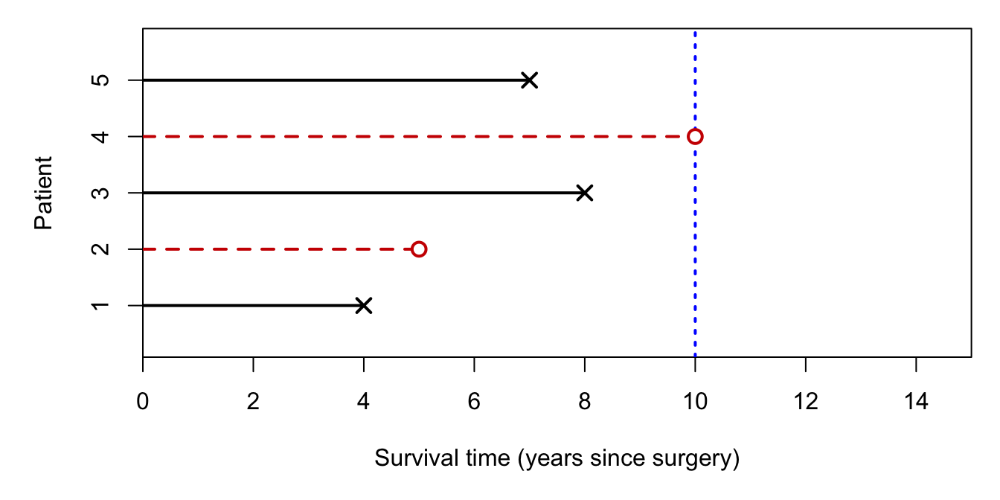

15 Introduction to Survival Analysis
15.1 What is survival analysis?
In many statistical problems the response variable of interest is the time taken for a specific event to occur. We call this a survival time and denote it by \(T > 0\). The event is sometimes called the endpoint. Although the name “survival analysis” originated in biomedical applications — where the endpoint is literally death — the methods apply far more broadly:
- time from surgery to death or relapse (medicine);
- time to failure of a mechanical or electronic component (reliability);
- time until a criminal reoffends after release from prison (criminology);
- duration of first marriage (sociology);
- time until an insurance claim is made (actuarial science).
Two features distinguish survival data from the more familiar continuous response variables we have seen in Parts I and II.
Skewness. Survival times are strictly positive (\(T > 0\)) and typically right-skewed: most individuals experience the event relatively early, but a small number survive much longer. Normal-linear models are therefore usually inappropriate.
Censoring. In many studies it is impossible to observe the exact survival time for every individual. The survival time is then said to be censored. Censoring is the central methodological challenge of survival analysis, and handling it correctly is the main focus of Part III.
15.2 Motivating example
The survival times are summarised in Figure 15.1. Patients 1, 3, and 5 were observed to die at years 4, 8, and 7 after surgery. Patient 2 was lost to follow-up at year 5 (perhaps they withdrew from the study), so their exact death time is unknown. Patient 4 was still alive at the end of the 10-year observation period.
For patients 2 and 4, we know only that \(T > t^*\) for some observed time \(t^*\). These observations are right-censored.
Suppose we wish to estimate \(\Prob(T > 6)\), the probability that a randomly chosen future patient survives more than 6 years. Three naive approaches all fail:
Ignore censoring, treat as deaths: Only 1 of 5 patients died within 6 years, so \(\hat p = 4/5\). But this assumes censored patients did not die after leaving the study — optimistic, and tends to overestimate survival.
Treat censored observations as deaths: 2 of 5 patients “died” within 6 years, so \(\hat p = 3/5\). This is pessimistic and tends to underestimate survival.
Exclude censored observations: 1 of 3 observed deaths was before year 6, so \(\hat p = 2/3\). But this discards the information that patient 4 definitely survived beyond 6 years, and would give the nonsensical estimate \(\Prob(T > 9) \approx 0\).
All three approaches are unsatisfactory. The methods developed in this part of the course are designed to make proper use of censored data.
15.3 Types of censoring
Right censoring is the most common type and is the focus of this course. Other types include:
Left censoring: the event occurred before a certain time, but the exact time is unknown (\(T < t^*\)). For example, a patient whose cancer was present before their first screening but the exact onset is unknown.
Interval censoring: it is known only that \(T\) falls in some interval \((a, b)\). For example, if annual screenings reveal a disease first at time \(b\) but it was absent at time \(a\).
15.4 Assumptions
Throughout this part of the course we make the following assumptions.
Important
Assumption 1 (Uninformative censoring). Censoring times are independent of survival times. There is no systematic tendency for individuals who would die sooner (or later) to be censored sooner (or later).
Important
Assumption 2 (Eventual event). \(\Prob(T < \infty) = 1\). Every individual will eventually experience the event of interest.
Important
Assumption 3 (i.i.d. sample). The survival times \(T_1, T_2, \ldots, T_n\) form an independent and identically distributed (i.i.d.) random sample from a common distribution.
In many analyses we will additionally observe covariates (explanatory variables) for each individual, and the survival distribution will depend on those covariates. Regression models for this are introduced in Chapter 22.
15.5 Observed data structure
In practice, for each individual \(i = 1, \ldots, n\) we observe a pair \((t_i, \delta_i)\) where:
\[ t_i = \min(T_i,\, C_i), \qquad \delta_i = \mathbf{1}(T_i \leq C_i) \]
and \(C_i\) is the censoring time. That is, \(t_i\) is the observed time (either the true event time if uncensored, or the censoring time if censored), and \(\delta_i\) is the event indicator: \(\delta_i = 1\) if the event was observed, \(\delta_i = 0\) if censored.
For the AVR example:
| Patient | \(t_i\) | \(\delta_i\) |
|---|---|---|
| 1 | 4 | 1 (death) |
| 2 | 5 | 0 (censored) |
| 3 | 8 | 1 (death) |
| 4 | 10 | 0 (censored) |
| 5 | 7 | 1 (death) |
In R, this structure is represented using Surv() from the survival package:
Code
library(survival)
t <- c(4, 5, 8, 10, 7)
delta <- c(1, 0, 1, 0, 1)
Surv(t, delta)The + symbol in the output of Surv() denotes a censored observation.
Exercises
15.1. Twenty bedridden patients are placed on a new pressure-relieving mattress and checked daily for 12 days for the development of a pressure ulcer. Ten patients developed an ulcer, discovered at daily checks on days 1, 2, 2, 2, 5, 5, 8, 8, 8, and 8. Five patients were removed from the study between the day-6 and day-7 check (they had not yet developed an ulcer). The remaining five patients lasted the full 12 days and were gradually discharged over the following week without having developed an ulcer.
What type of censoring applies to the five patients removed between day 6 and day 7?
The five patients removed between day 6 and day 7 are subject to:
What type of censoring applies to the ulcer event times themselves (e.g., an ulcer discovered at the day-8 check)?
An ulcer discovered at a daily check is an example of:
Given the combination of censoring types present, which non-parametric survival estimator is most appropriate?
The most appropriate estimator for these data is:
For each interval \([t_{j-1}, t_j)\): let \(n_j\) be the number at risk at the start of the interval, \(d_j\) the number of events (ulcers discovered), and \(c_j\) the number of censored observations within the interval. The effective risk set is \(n'_j = n_j - c_j/2\). The actuarial factor for that interval is \((n'_j - d_j)/n'_j\) (set to 1 if \(d_j = 0\)). The survival estimate is the product of all factors up to and including interval \(j\).
Construct the actuarial life table, showing columns for interval, \(n_j\), \(d_j\), \(c_j\), \(n'_j\), the interval factor, and the cumulative \(\hat{S}(t)\).
State the estimated probability of not developing an ulcer over the 12-day study period.